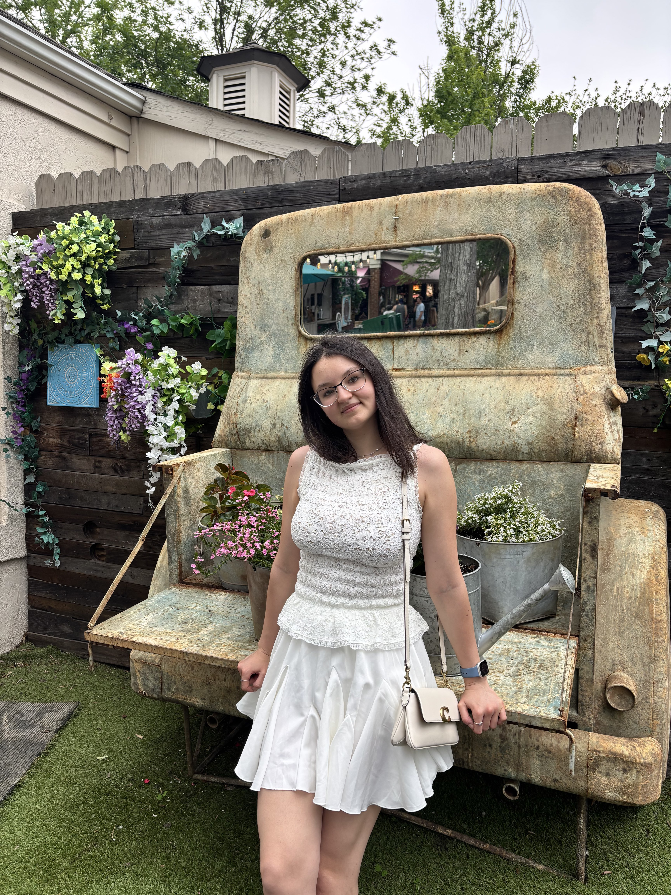
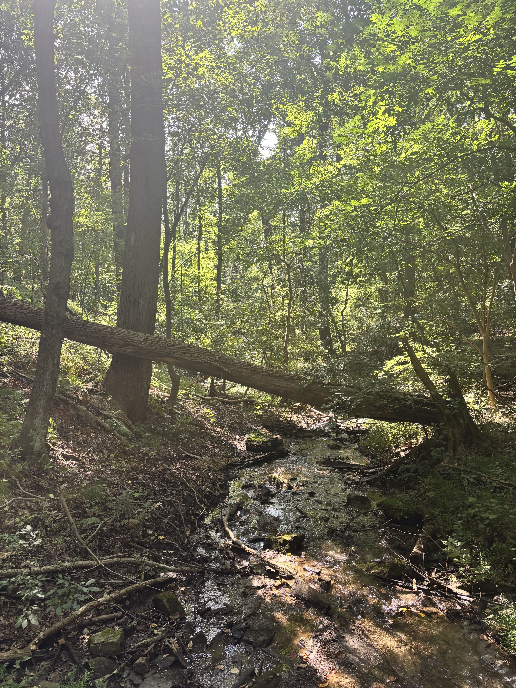
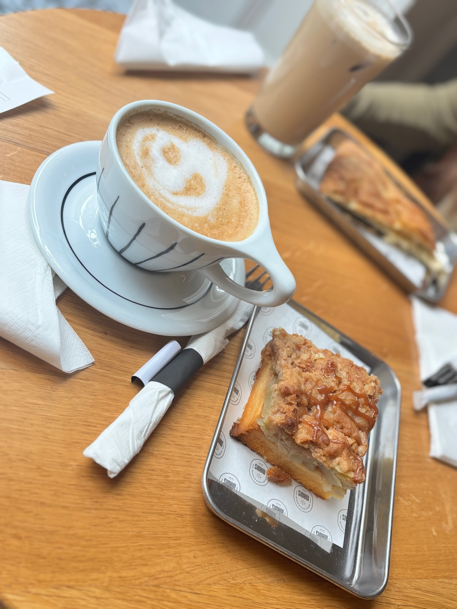
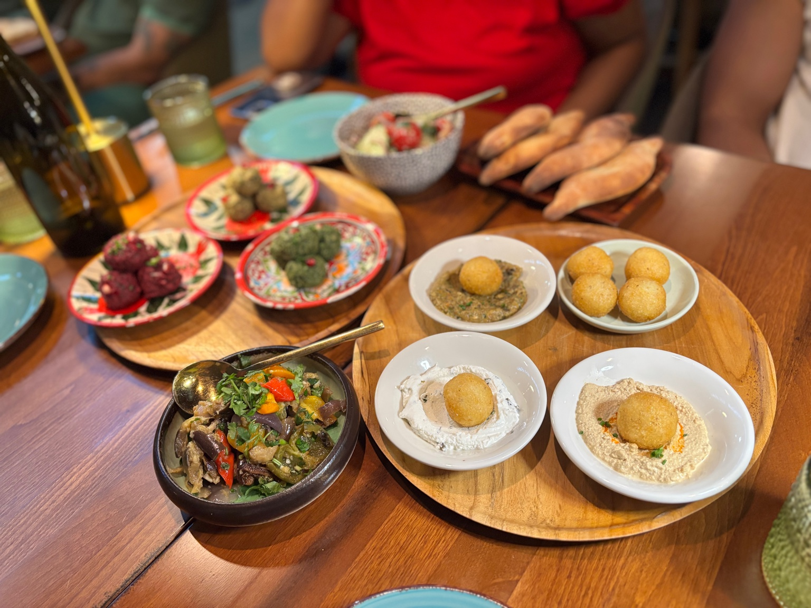

I am currently a Ph.D. student in the Department of Biology at Temple University, working in the Feng Lab at Fox Chase Cancer Center.
My academic and research experiences have led me to pursue cancer biology, with a particular interest in the biological processes that determine how cancer cells grow, adapt, and respond to treatment. I am interested in combining experimental and genomic approaches to better understand these processes and identify vulnerabilities that could have therapeutic relevance. My goal is to build a career in cancer research and contribute to a deeper understanding of cancer biology and the development of new therapeutic strategies.
The Feng Lab at Fox Chase Cancer Center
Our research uses experimental and genomic approaches to investigate mechanisms of cancer biology and therapeutic response. My work combines hands-on experimental research with approaches such as CRISPR, flow cytometry, genomic profiling, and in vivo models.
A few things I enjoy
Science is a big part of my life, but I also enjoy slowing down, exploring new places, spending time with friends, and making time for the things I love outside the lab.

Hiking & Being Outdoors
I enjoy getting outside, exploring trails, and spending time in nature.

Coffee Shops
I love discovering new coffee shops and finding a good spot to slow down with a coffee and something sweet.
Reading & Books
Reading is one of my favorite ways to unwind, especially when I find a book that completely pulls me in.

Trying New Food
I enjoy trying new restaurants and foods with friends and making an evening out of it.